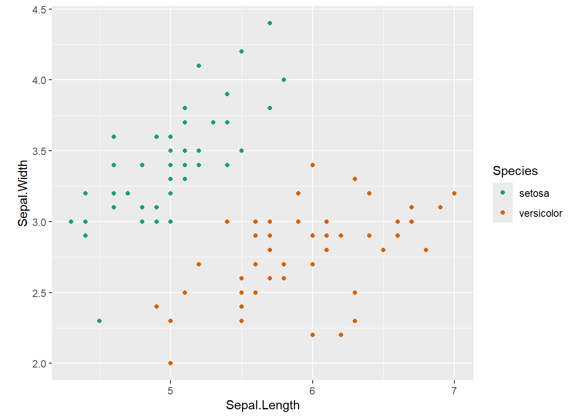
3 Decision Trees
3.1 Motivational Example Dataset
Features: Sepal Length, Sepal Width
Outcome: Species: setosa/versicolor
3.1.1 Predictor space
3.1.2 Decision Tree
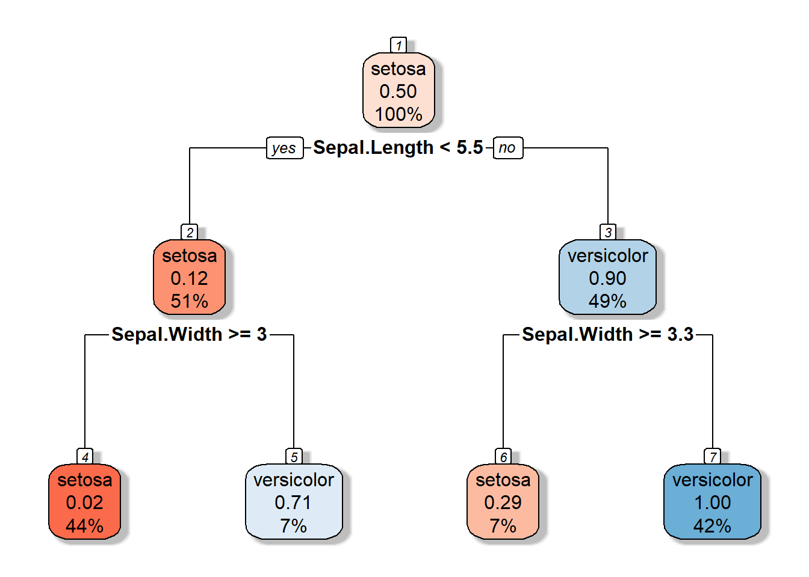
3.1.3 Partition space
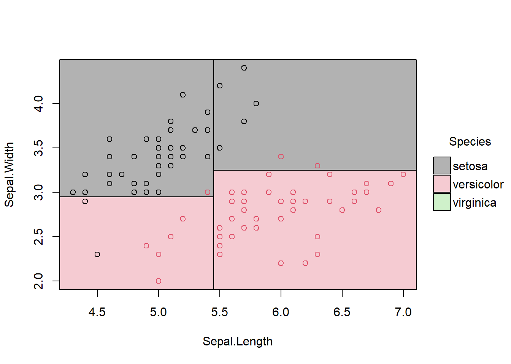
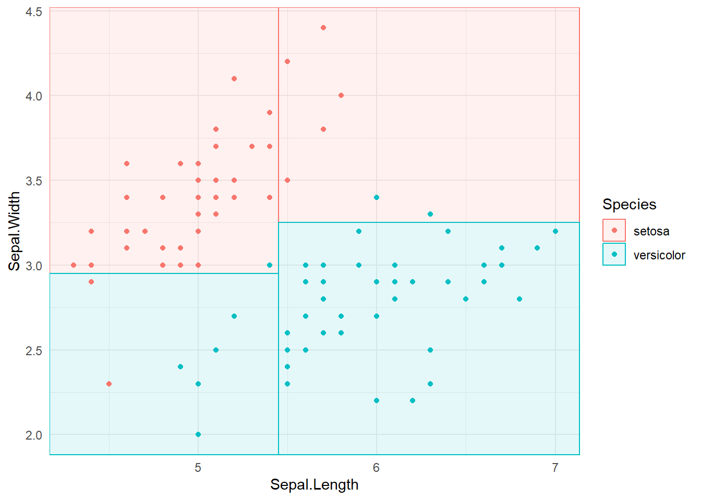
\(R1 = \{X|Sepal.Width >=3, Sepal.Length <5.5 \}\)
3.2 Parts of a decision tree
Root node
Decision node
Terminal node/ Leaf node (gives outputs/class assignments)
Subtree
3.3 Introduction
What happens in the model training phase?
Stratify or segment the predictor space into a number of non-overlapping regions.
Set of splitting rules are used to segment the predictor space.
Decision tree consists of a series of splitting rules.
How to make predictions?
Mean or mode response value for the training observations in the region which the observation we want to predict belong to.
We make the same prediction, for the training observations in the \(j^{th}\) region \(R_j\).
3.4 Decision Trees: Regression - Finding the best split and best splitting variable
The goal is to find \(R_1, R_2, R_3...R_J\), \(J\) distinct and non-overlapping regions that minimize the RSS given by
\[\sum_{j=1}^{J}\sum_{i \in R_j}(y_i - \hat{y}_{R_j})^2.\] \(\hat{y}_{R_j}\) - mean response for the training observations within the \(j^{th}\) region.
In theory, to build the best possible decision tree, we could try every possible way of splitting the data at every step and choose the one that gives the best results. However, this is computationally infeasible, especially when the dataset is large or when there are many predictor variables — the number of possible splits grows exponentially.
Therefore, instead of trying all possible combinations at once, we use a recursive partitioning approach. This means:
Start with the entire dataset as one group (the root node).
Find the single best split — the one that most effectively separates the data based on the target variable.
Divide the data into two or more subgroups (child nodes) based on that split.
Repeat the process (recursively) within each subgroup: again find the best split, divide the data, and continue until a stopping rule is met (for example, minimum node size or maximum tree depth).
This recursive process allows the algorithm to build the tree step by step, finding locally optimal splits that approximate the best possible tree without having to evaluate every possible combination.
3.5 Recursive Partitioning for Regression Trees
A regression tree predicts a continuous outcome (for example, house price, temperature, or pH level). The goal is to split the data into smaller and smaller groups (nodes) that are as homogeneous as possible with respect to the response variable.
In-class notation
3.6 Recursive Partitioning for Regression Trees
A regression tree is used when the response variable is continuous (e.g., house price, temperature, or pH level).
The goal is to split the data into smaller and smaller groups (nodes) that are as homogeneous as possible with respect to the response.
3.6.1 Step 1: Start with All Predictors
At the beginning, the algorithm considers all predictor variables:
\[X_1, X_2, X_3, \dots, X_p\]
For each predictor, it looks for the best split point that divides the data into two groups such that the prediction error (usually the sum of squared errors, SSE) is minimized.
3.6.2 Step 2: Consider All Possible Values
3.6.2.1 Continuous predictors
If a predictor \(X_j\) is continuous,
then “all possible values” refers to all unique values (or midpoints between consecutive sorted values) that can be used to split the data.
Example:
| Observation | \(X_j\) |
|---|---|
| 1 | 2 |
| 2 | 3 |
| 3 | 5 |
| 4 | 7 |
Possible split points (midpoints): - \(X_j < 2.5\) - \(X_j < 4\) - \(X_j < 6\)
Each of these potential splits is tested to see how well it reduces the SSE of the response variable.
3.6.2.2 Categorical predictors
If \(X_j\) is categorical,
“all possible values” means all possible groupings (subsets) of the categories.
Example:
If the predictor Species = {A, B, C}, possible splits are:
{A} vs {B, C}
{B} vs {A, C}
{C} vs {A, B}
Each grouping is evaluated based on how much it reduces the variability in the response.
3.6.3 Step 3: Choose the Best Split
For every predictor and every possible split value, compute:
\[ \text{SSE}_{\text{split}} = \text{SSE}_{\text{left node}} + \text{SSE}_{\text{right node}} \]
The split that minimizes this total SSE is chosen as the best split for that node.
3.6.4 Step 4: Recursive Partitioning
After splitting the data into two nodes, the same process is applied recursively within each node:
- Consider all predictors again.
- For each predictor, test all possible values.
- Find the best split within that node.
- Continue until a stopping rule is met (e.g., minimum node size or no significant improvement).
3.6.5 Summary
| Concept | Explanation |
|---|---|
| All predictors | Every variable \(X_1, X_2, \dots, X_p\) is considered at each split. |
| All possible values | Every unique value (or midpoint between values) is tested as a potential split. |
| Recursive partitioning | The process of repeatedly splitting the data into smaller homogeneous groups until a stopping rule is met. |
In summary:
Finding every possible combination of splits is computationally infeasible.
Recursive partitioning provides a practical, step-by-step method that finds locally optimal splits efficiently.
3.7 Depth of the decision tree
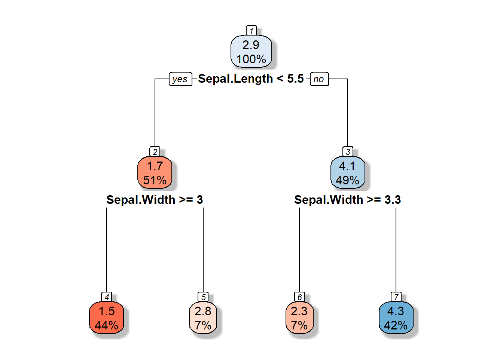
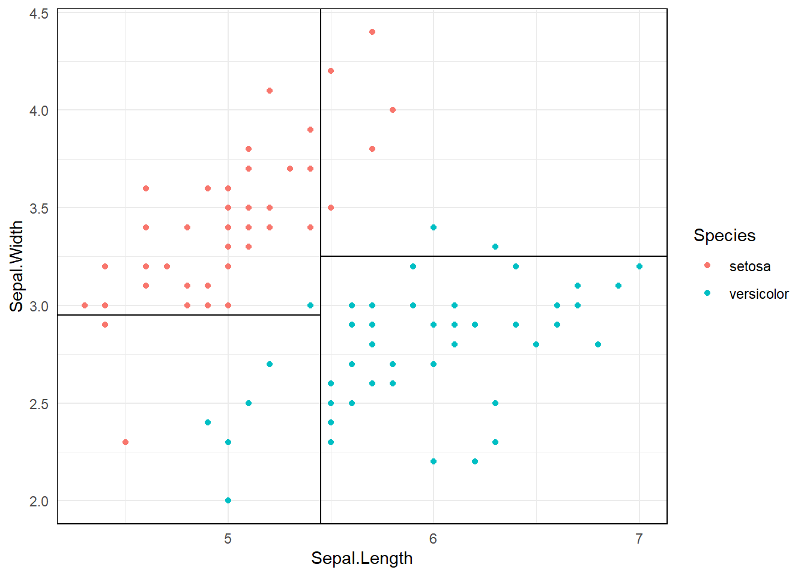
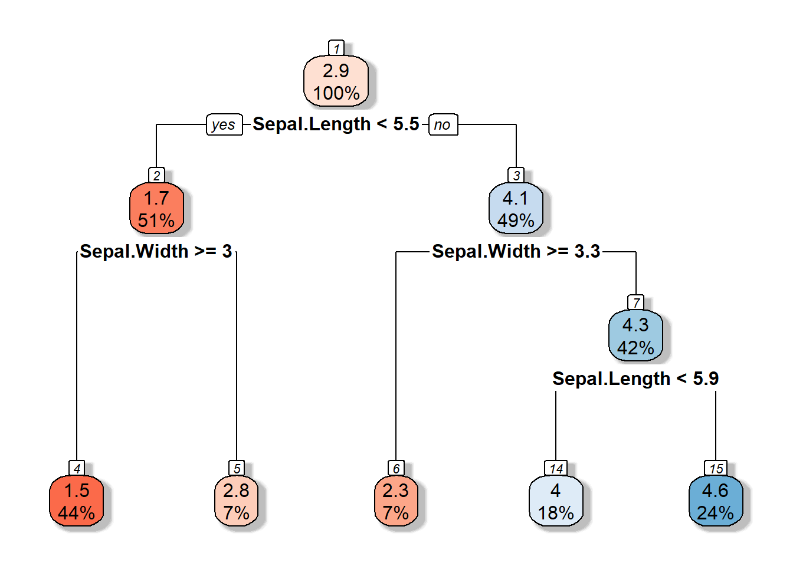
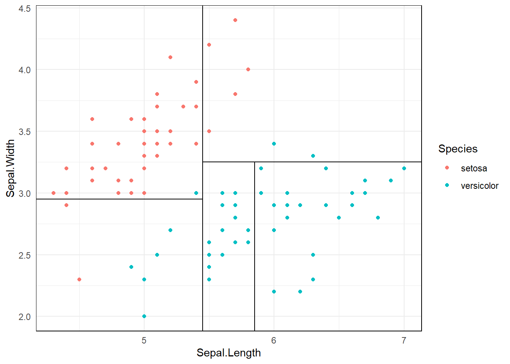
3.8 Pruning Regression Trees
Once a regression tree is grown, it often becomes too complex — it may fit the training data very well but perform poorly on new, unseen data.
This problem is known as overfitting.
Pruning is the process of reducing the size of a fully grown tree to improve its ability to generalize.
3.8.1 Why Prune?
- A large tree captures noise as if it were structure.
- It has low bias but high variance.
- Pruning helps to find a balance between model complexity and prediction accuracy.
3.8.2 Types of Pruning
There are two main approaches:
3.8.2.1 (a) Pre-pruning (Early stopping)
Stop the tree growth before it becomes too large.
Common stopping rules:
Minimum number of observations in a node
Maximum tree depth
Minimum decrease in SSE required for a split
3.8.2.2 (b) Post-pruning (Cost Complexity Pruning)
Grow a large tree first, then prune it backward by removing branches that contribute little to predictive accuracy.
3.8.3 Cost Complexity Pruning (a.k.a. Weakest Link Pruning)
The idea is to penalize tree size using a complexity parameter (\(\lambda\)).
For any subtree ( T ):
\[ C(T) = \text{Error}(T) + \lambda L(T) \]
where:
- (T): measure of fit (e.g., sum of squared errors)
- \(L(T)\): number of leaf nodes in the tree (measure of complexity)
- \(\lambda\): penalty factor controlling the trade-off between complexity and predictive power
3.8.4 Interpretation of Parameters
| Parameter | Meaning |
|---|---|
| \(\lambda = 0\) | Fully grown decision tree (no penalty for complexity). |
| \(\lambda = \infty\) | Root node only (maximum penalty, no splits). |
| \(0 < \lambda < \infty\) | Balances predictive power and complexity. |
3.8.5 Total Cost Components
\[ \text{Total Cost} = \text{Measure of Fit} + \text{Measure of Complexity} \]
- Measure of Fit: Error (e.g., SSE)
- Measure of Complexity: Number of leaf nodes \(L(T)\)
So, \[ C(T) = \text{Error}(T) + \lambda L(T) \]
This is sometimes written as:
\[ R_\lambda(T) = R(T) + \lambda |T| \]
Both expressions represent the same concept — a trade-off between model fit and simplicity.
3.9 Example R code for Pre-pruning and Post-pruning
# Load necessary packages
library(rpart)
library(rpart.plot)
# Use built-in dataset
data(mtcars)
# -----------------------------
# 🌱 1. Pre-pruning (Early stopping)
# -----------------------------
# Control parameters limit tree growth
prepruned_tree <- rpart(
mpg ~ .,
data = mtcars,
method = "anova",
control = rpart.control(
minsplit = 10, # minimum observations required to attempt a split
cp = 0.02, # minimum improvement in SSE required for a split
maxdepth = 3 # maximum depth of the tree
)
)
# Visualize the pre-pruned tree
rpart.plot(prepruned_tree, main = "Pre-pruned Regression Tree")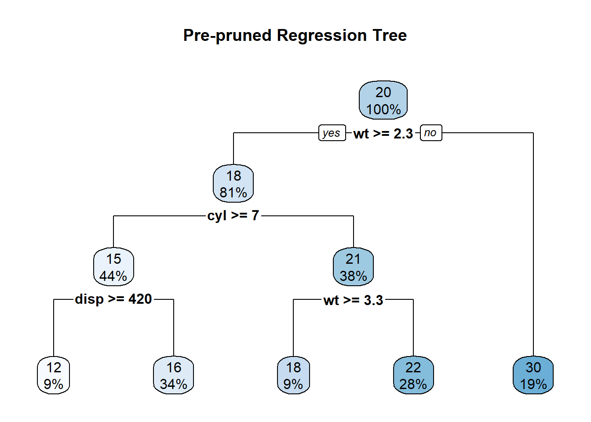
# Print summary
print(prepruned_tree)n= 32
node), split, n, deviance, yval
* denotes terminal node
1) root 32 1126.047000 20.09062
2) wt>=2.26 26 346.566500 17.78846
4) cyl>=7 14 85.200000 15.10000
8) disp>=420 3 12.326670 11.83333 *
9) disp< 420 11 32.129090 15.99091 *
5) cyl< 7 12 42.122500 20.92500
10) wt>=3.3275 3 1.086667 18.36667 *
11) wt< 3.3275 9 14.855560 21.77778 *
3) wt< 2.26 6 44.553330 30.06667 *summary(prepruned_tree)Call:
rpart(formula = mpg ~ ., data = mtcars, method = "anova", control = rpart.control(minsplit = 10,
cp = 0.02, maxdepth = 3))
n= 32
CP nsplit rel error xerror xstd
1 0.65266121 0 1.0000000 1.0863063 0.26519210
2 0.19470235 1 0.3473388 0.6852332 0.16791734
3 0.03618342 2 0.1526364 0.3430358 0.10012133
4 0.02324972 3 0.1164530 0.2957831 0.07419667
5 0.02000000 4 0.0932033 0.2887422 0.07322052
Variable importance
wt disp hp drat cyl qsec vs
27 25 19 11 9 5 5
Node number 1: 32 observations, complexity param=0.6526612
mean=20.09062, MSE=35.18897
left son=2 (26 obs) right son=3 (6 obs)
Primary splits:
wt < 2.26 to the right, improve=0.6526612, (0 missing)
cyl < 5 to the right, improve=0.6431252, (0 missing)
disp < 163.8 to the right, improve=0.6130502, (0 missing)
hp < 118 to the right, improve=0.6010712, (0 missing)
vs < 0.5 to the left, improve=0.4409477, (0 missing)
Surrogate splits:
disp < 101.55 to the right, agree=0.969, adj=0.833, (0 split)
hp < 92 to the right, agree=0.938, adj=0.667, (0 split)
drat < 4 to the left, agree=0.906, adj=0.500, (0 split)
cyl < 5 to the right, agree=0.844, adj=0.167, (0 split)
Node number 2: 26 observations, complexity param=0.1947024
mean=17.78846, MSE=13.32948
left son=4 (14 obs) right son=5 (12 obs)
Primary splits:
cyl < 7 to the right, improve=0.6326174, (0 missing)
disp < 266.9 to the right, improve=0.6326174, (0 missing)
hp < 136.5 to the right, improve=0.5803554, (0 missing)
wt < 3.325 to the right, improve=0.5393370, (0 missing)
qsec < 18.15 to the left, improve=0.4210605, (0 missing)
Surrogate splits:
disp < 266.9 to the right, agree=1.000, adj=1.000, (0 split)
hp < 136.5 to the right, agree=0.962, adj=0.917, (0 split)
wt < 3.49 to the right, agree=0.885, adj=0.750, (0 split)
qsec < 18.15 to the left, agree=0.885, adj=0.750, (0 split)
vs < 0.5 to the left, agree=0.885, adj=0.750, (0 split)
Node number 3: 6 observations
mean=30.06667, MSE=7.425556
Node number 4: 14 observations, complexity param=0.03618342
mean=15.1, MSE=6.085714
left son=8 (3 obs) right son=9 (11 obs)
Primary splits:
disp < 420 to the right, improve=0.4782188, (0 missing)
wt < 4.66 to the right, improve=0.4782188, (0 missing)
hp < 192.5 to the right, improve=0.4669349, (0 missing)
carb < 3.5 to the right, improve=0.4669349, (0 missing)
qsec < 17.71 to the right, improve=0.4306658, (0 missing)
Surrogate splits:
wt < 4.66 to the right, agree=1.000, adj=1.000, (0 split)
drat < 3.035 to the left, agree=0.857, adj=0.333, (0 split)
qsec < 17.41 to the right, agree=0.857, adj=0.333, (0 split)
Node number 5: 12 observations, complexity param=0.02324972
mean=20.925, MSE=3.510208
left son=10 (3 obs) right son=11 (9 obs)
Primary splits:
wt < 3.3275 to the right, improve=0.6215272, (0 missing)
cyl < 5 to the right, improve=0.5573591, (0 missing)
hp < 96 to the right, improve=0.5507811, (0 missing)
disp < 163.8 to the right, improve=0.4615111, (0 missing)
carb < 3 to the right, improve=0.2857431, (0 missing)
Surrogate splits:
disp < 163.8 to the right, agree=0.917, adj=0.667, (0 split)
hp < 116.5 to the right, agree=0.833, adj=0.333, (0 split)
Node number 8: 3 observations
mean=11.83333, MSE=4.108889
Node number 9: 11 observations
mean=15.99091, MSE=2.920826
Node number 10: 3 observations
mean=18.36667, MSE=0.3622222
Node number 11: 9 observations
mean=21.77778, MSE=1.650617 # -----------------------------
# 🌳 2. Post-pruning (Cost-complexity pruning)
# -----------------------------
# Step 1: Grow a large tree first
full_tree <- rpart(
mpg ~ .,
data = mtcars,
method = "anova",
control = rpart.control(cp = 0.0001) # allow the tree to grow large
)
# Step 2: Display complexity parameter (CP) table
printcp(full_tree)
Regression tree:
rpart(formula = mpg ~ ., data = mtcars, method = "anova", control = rpart.control(cp = 1e-04))
Variables actually used in tree construction:
[1] cyl hp
Root node error: 1126/32 = 35.189
n= 32
CP nsplit rel error xerror xstd
1 0.643125 0 1.00000 1.02606 0.24552
2 0.097484 1 0.35687 0.64743 0.16940
3 0.000100 2 0.25939 0.53811 0.12137# Step 3: Plot cross-validation results
plotcp(full_tree, main = "Cost-Complexity Pruning Plot")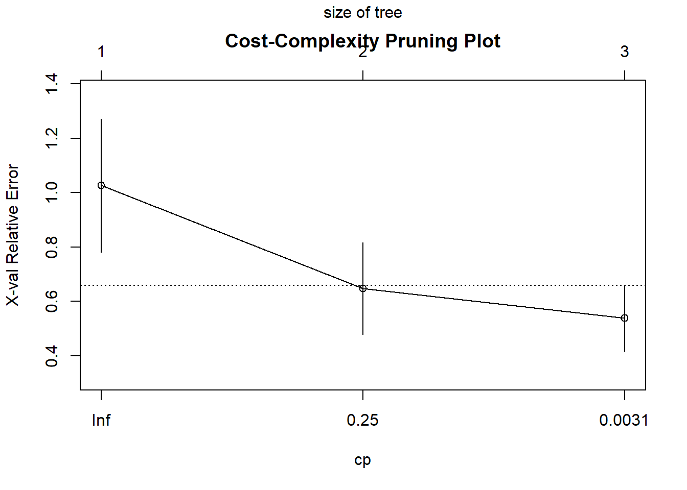
# Step 4: Select the cp value that minimizes cross-validation error
optimal_cp <- full_tree$cptable[which.min(full_tree$cptable[,"xerror"]), "CP"]
# Step 5: Prune the tree at the optimal cp value
pruned_tree <- prune(full_tree, cp = optimal_cp)
# Step 6: Visualize the pruned tree
rpart.plot(pruned_tree, main = "Post-pruned Regression Tree")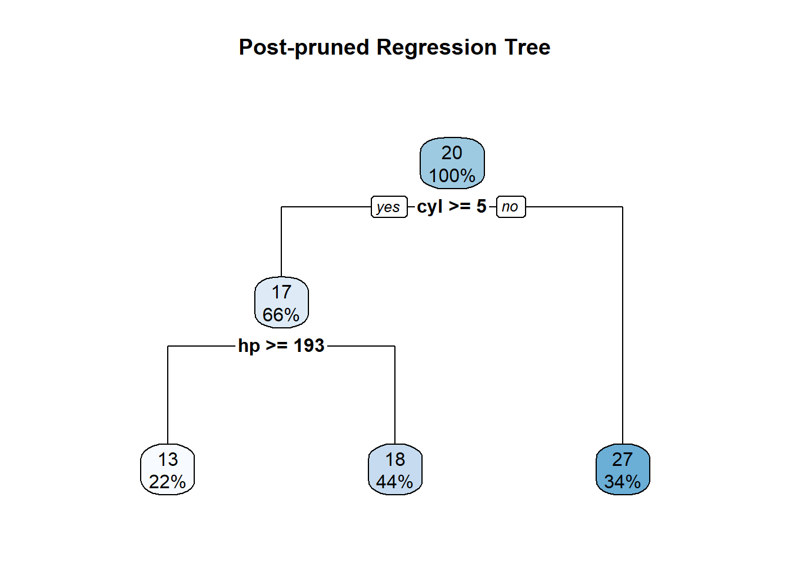
# Step 7: Summarize pruned model
summary(pruned_tree)Call:
rpart(formula = mpg ~ ., data = mtcars, method = "anova", control = rpart.control(cp = 1e-04))
n= 32
CP nsplit rel error xerror xstd
1 0.64312523 0 1.0000000 1.0260596 0.2455202
2 0.09748407 1 0.3568748 0.6474280 0.1694045
3 0.00010000 2 0.2593907 0.5381142 0.1213682
Variable importance
cyl disp hp wt qsec vs carb
20 20 19 16 12 11 1
Node number 1: 32 observations, complexity param=0.6431252
mean=20.09062, MSE=35.18897
left son=2 (21 obs) right son=3 (11 obs)
Primary splits:
cyl < 5 to the right, improve=0.6431252, (0 missing)
wt < 2.3925 to the right, improve=0.6356630, (0 missing)
disp < 163.8 to the right, improve=0.6130502, (0 missing)
hp < 118 to the right, improve=0.6010712, (0 missing)
vs < 0.5 to the left, improve=0.4409477, (0 missing)
Surrogate splits:
disp < 142.9 to the right, agree=0.969, adj=0.909, (0 split)
hp < 101 to the right, agree=0.938, adj=0.818, (0 split)
wt < 2.5425 to the right, agree=0.906, adj=0.727, (0 split)
qsec < 18.41 to the left, agree=0.844, adj=0.545, (0 split)
vs < 0.5 to the left, agree=0.844, adj=0.545, (0 split)
Node number 2: 21 observations, complexity param=0.09748407
mean=16.64762, MSE=9.451066
left son=4 (7 obs) right son=5 (14 obs)
Primary splits:
hp < 192.5 to the right, improve=0.5530828, (0 missing)
cyl < 7 to the right, improve=0.5068475, (0 missing)
disp < 266.9 to the right, improve=0.5068475, (0 missing)
wt < 3.49 to the right, improve=0.4414890, (0 missing)
drat < 3.075 to the left, improve=0.1890739, (0 missing)
Surrogate splits:
disp < 334 to the right, agree=0.857, adj=0.571, (0 split)
wt < 4.66 to the right, agree=0.810, adj=0.429, (0 split)
qsec < 15.455 to the left, agree=0.810, adj=0.429, (0 split)
carb < 3.5 to the right, agree=0.762, adj=0.286, (0 split)
gear < 4.5 to the right, agree=0.714, adj=0.143, (0 split)
Node number 3: 11 observations
mean=26.66364, MSE=18.48959
Node number 4: 7 observations
mean=13.41429, MSE=4.118367
Node number 5: 14 observations
mean=18.26429, MSE=4.276582 3.10 Classification Trees: Best Split, Entropy, and Gini Coefficients
Classification trees are used when the response variable is categorical.
At each node, the algorithm tries to find the best split — the one that produces the most homogeneous (pure) child nodes.
3.10.1 The Idea of “Best Split”
At any node in the tree:
- The data are divided into two (or more) groups based on a predictor.
- The best split is the one that makes each resulting group as pure as possible with respect to the class labels.
To measure purity, we use impurity measures such as:
Entropy
Gini index
(Sometimes) Misclassification error
3.10.2 Entropy
Entropy measures the disorder or uncertainty in a node.
If there are ( K ) classes and ( p_k ) is the proportion of observations belonging to class ( k ), then:
\[ \text{Entropy} = - \sum_{k=1}^{K} p_k \log_2(p_k) \]
3.10.2.1 Properties:
- Entropy = 0 → Node is perfectly pure (all observations belong to one class).
- Entropy is maximum when all classes are equally likely.
3.10.2.2 Example:
| Class | Count | \(p_k\) | \(-p_k \log_2(p_k)\) |
|---|---|---|---|
| A | 8 | 0.8 | 0.257 |
| B | 2 | 0.2 | 0.464 |
\[ \text{Entropy} = 0.257 + 0.464 = 0.721 \]
3.10.3 Gini Index
The Gini coefficient (or Gini impurity) is another measure of node impurity.
\[ \text{Gini} = 1 - \sum_{k=1}^{K} p_k^2 \]
3.10.3.1 Properties:
Gini = 0 → Perfectly pure node
Gini is smaller when the node is more homogeneous
3.10.3.2 Example:
Using the same proportions as above ( \(p_1 = 0.8, p_2 = 0.2\) ):
\[ \text{Gini} = 1 - (0.8^2 + 0.2^2) = 1 - (0.64 + 0.04) = 0.32 \]
3.10.4 Misclassification Error (less common)
A simpler impurity measure sometimes used:
\[ \text{Error} = 1 - \max(p_k) \]
For the same node ( \(\max(p_k) = 0.8\) ):
\[ \text{Error} = 1 - 0.8 = 0.2 \]
3.10.5 Choosing the Best Split
For each possible split:
Compute the impurity (Entropy or Gini) before splitting — call this \(I_{\text{parent}}\).
Compute the impurity of the child nodes (weighted by their sizes):
\[ I_{\text{split}} = \frac{n_L}{n} I_L + \frac{n_R}{n} I_R \]
- Compute the information gain (reduction in impurity):
\[ \text{Gain} = I_{\text{parent}} - I_{\text{split}} \]
- The best split is the one that maximizes this gain (i.e., gives the largest reduction in impurity).
3.10.6 Comparing Entropy and Gini
| Property | Entropy | Gini |
|---|---|---|
| Range | 0 to 1 | 0 to 0.5 |
| Shape | Logarithmic | Quadratic |
| Interpretation | Information theory measure | Probability of misclassification |
| Behavior | Slightly more sensitive to rare classes | Computationally simpler |
| Commonly used in | C4.5, ID3 algorithms | CART algorithm |
Both criteria often lead to similar splits in practice.